- 1. Welcome Notification
- 2. Self Review
- 3. Appraiser's Review
- 4. HR Review
- 5. 360 Feedback
- 6. 1:1
- 7. KPI
- 8. Praise
- 9. PIP (Performance Improvement Plan)
Performance Management 365
Email Notification Templates — Knowledge Base
What triggers each email, and what it says
Contents
1. Welcome Notification
Sent automatically to a new employee the moment their user account is created in PM365. This is the very first email a new hire receives from the system.
1. Welcome Notification
Trigger: An Admin/HR user opens Administration → Users → Add User, fills in the new employee's details, and clicks “Save and Notify” (instead of a plain “Save”).
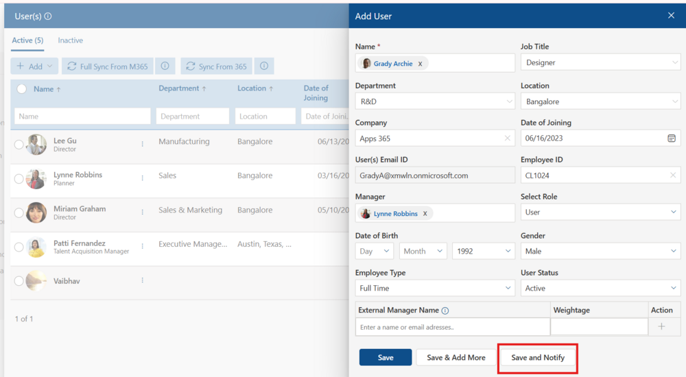
Add User form — clicking “Save and Notify” (highlighted) creates the account and fires the welcome email.
Email Template:

2. Self Review
Covers the stage where the employee evaluates their own performance. All the date-based reminders in this module are calculated from the “Self Review Start Date” and the number of days configured for Self Review on the Appraisal Cycle.
1. Self Review Announcement (1 day before Self Review starts)
Trigger: Calculated automatically from the Appraisal Cycle setup — specifically the “Self Review Start Date” field. One day before that date, this heads-up email goes out.
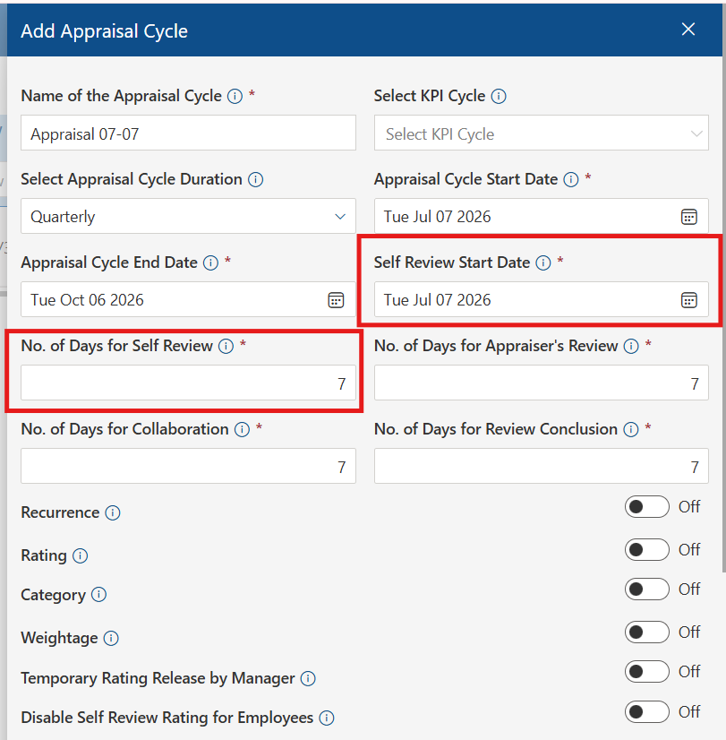
Appraisal Cycle setup — “Self Review Start Date” and “No. of Days for Self Review” drive this and the next 3 templates.
Email Template:
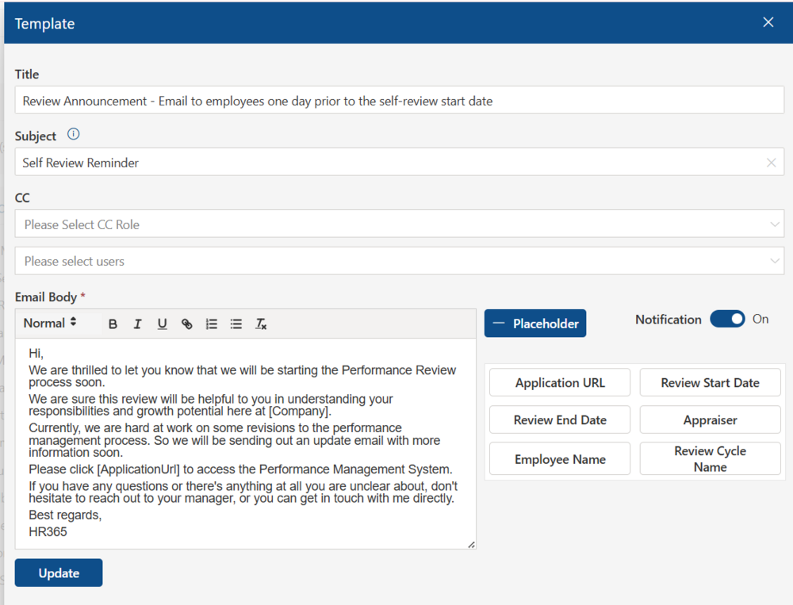
2. Self Review Notification (on the start date)
Trigger: Fires automatically on the Self Review Start Date itself, telling employees the review window is officially open.
Email Template:
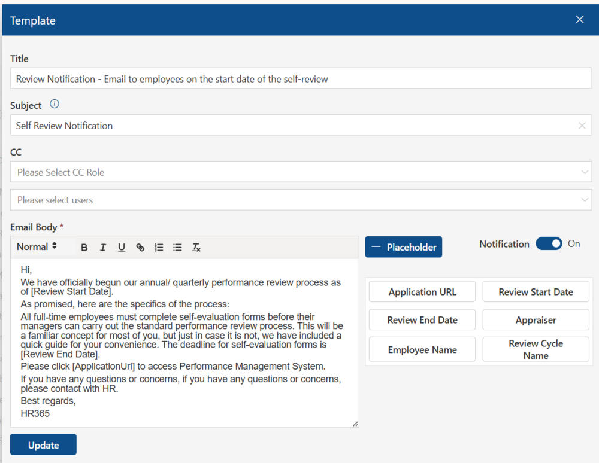
3. Self Review Last Day Reminder (1 day before it closes)
Trigger: Fires one day before the Self Review End Date, nudging employees who haven't submitted yet.
Email Template:
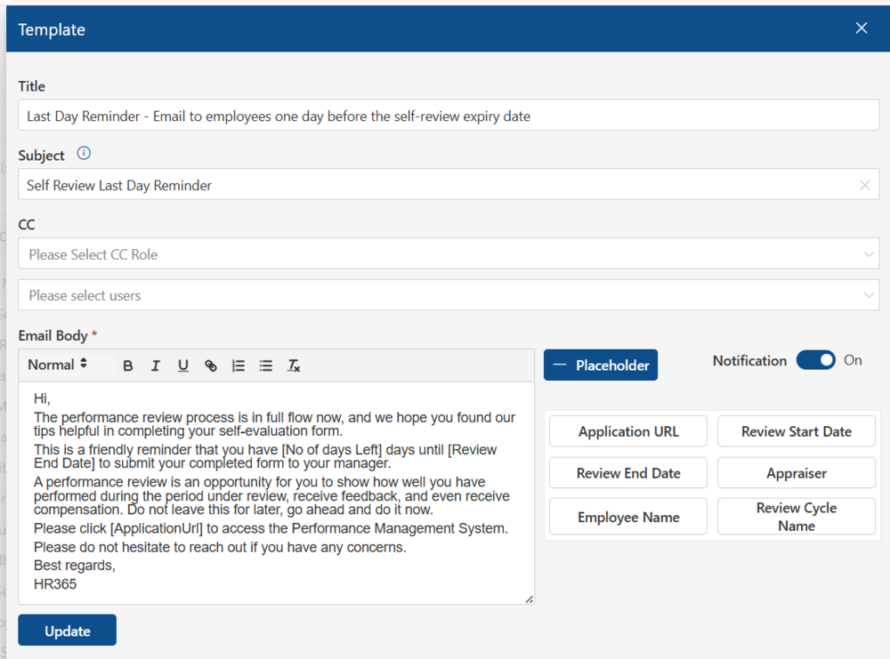
4. Self Review Last Day Notification (on the last day)
Trigger: Fires on the actual last day of the Self Review window.
Email Template:
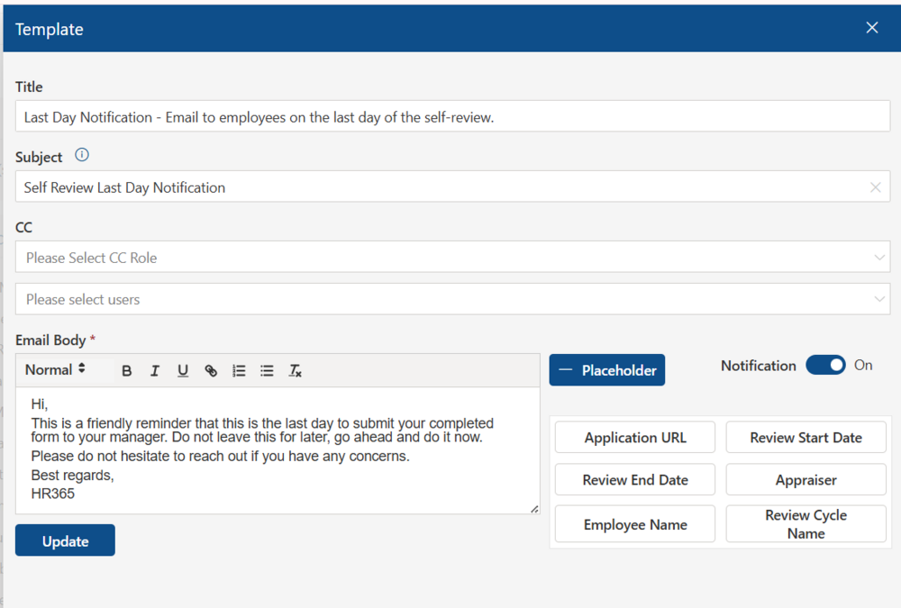
5. Self Review Submission Notification (to the employee)
Trigger: The employee fills in Achievements / Self Reflections / Action Plan / Summary, ticks the terms & conditions box, signs their name, and clicks “Submit & Sign.” PM365 immediately emails them a confirmation copy.

Employee's Self Review form — Achievements, Self Reflections, Action Plan, Summary tabs.
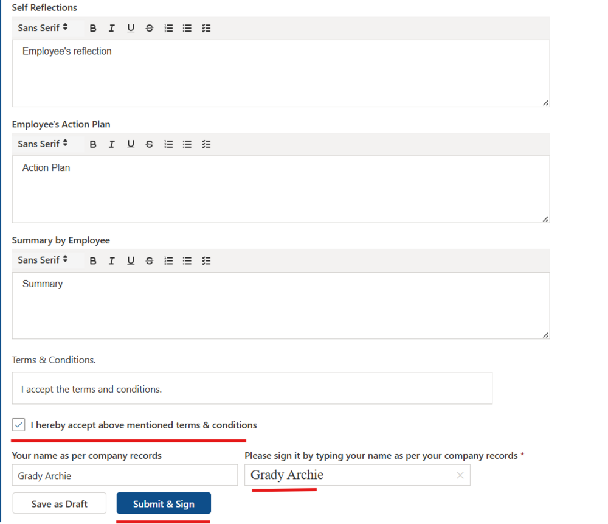
Employee accepts terms, signs, and clicks “Submit & Sign.”
Email Template:

6. Review Completion Notification (to the Manager/Appraiser)
Trigger: The same “Submit & Sign” action above also instantly emails the employee's manager, letting them know it's now their turn to review.
Email Template:
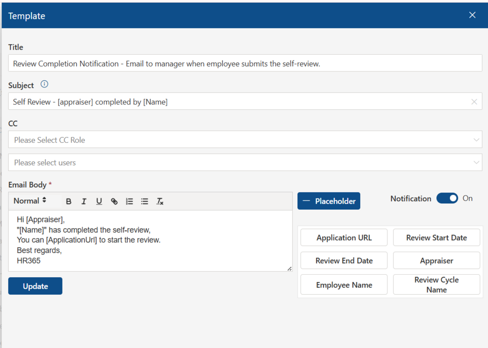
7. Review Resubmit (to the employee)
Trigger: If the manager isn't satisfied with the self-review, they open it, choose a Reject Reason, set a number of extra days, and click “Resubmit.” The employee is emailed and asked to redo their self-review.

Manager's “My Team” dashboard — opening an employee's completed self-review.
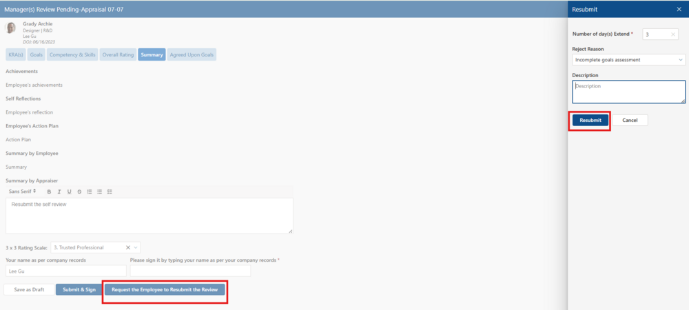
Manager clicks “Request the Employee to Resubmit the Review,” picks a reason, and clicks “Resubmit.”
Email Template:

3. Appraiser's Review
Covers the manager's (“appraiser's”) side of the review — evaluating the employee once the self-review is submitted. The date-based reminders here follow the same pattern as Self Review, but are calculated from the “No. of Days for Appraiser's Review” field on the Appraisal Cycle.
1. Appraisers Review Reminder (1 day before it starts)
Trigger: Calculated from the Appraisal Cycle's “No. of Days for Appraiser's Review” setting. Fires one day before the appraiser-review window opens.

Appraisal Cycle edit screen — “No. of Days for Appraiser's Review” drives this and the next 3 templates.
Email Template:
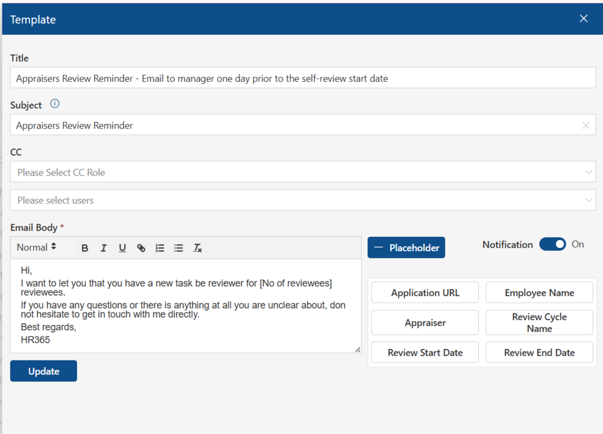
2. Appraisers Review Notification (on the start date)
Trigger: Fires automatically on the day the appraiser-review window opens.
Email Template:

3. Appraisers Review Last Day Reminder
Trigger: Fires one day before the appraiser-review window closes.
Email Template:

4. Appraisers Review Last Day Notification
Trigger: Fires on the actual last day of the appraiser-review window.
Email Template:
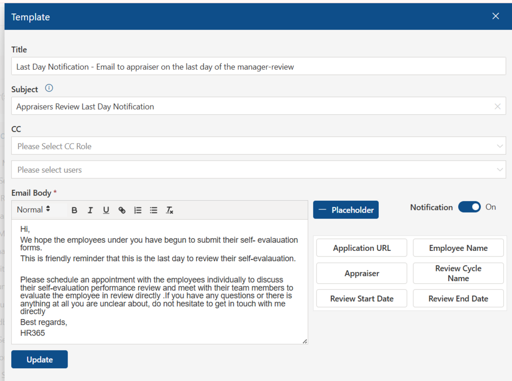
5. InProgress Appraisal Review Reminder (manual nudge)
Trigger: A manager can manually chase their own team: on the “My Team” dashboard they click the little envelope/“Send reminder” icon next to an employee’s row — this is an on-demand click, not a scheduled send.
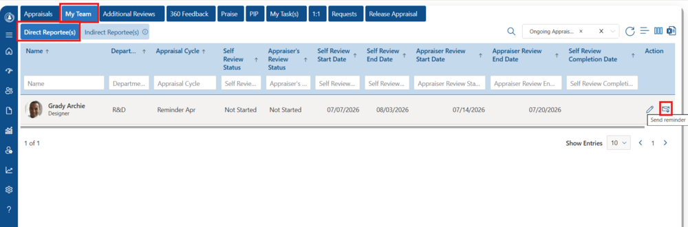
“My Team” dashboard — the envelope icon (tooltip “Send reminder”) lets a manager manually chase an employee.
Email Template:

6. Release Review (to the employee)
Trigger: Once both the self-review and appraiser review are marked “Completed,” the manager clicks the “Release” icon on the My Team dashboard, sharing the rating/feedback with the employee.

“My Team” dashboard — the “Release” icon becomes available once both reviews are complete.
Email Template:

7. Additional Appraiser Request (to an additional manager)
Trigger: The primary manager opens “Appraisal” → “Additional Reviews” → adds a colleague as an extra reviewer with a weightage, and clicks “Save.” That colleague is emailed a request to also review.
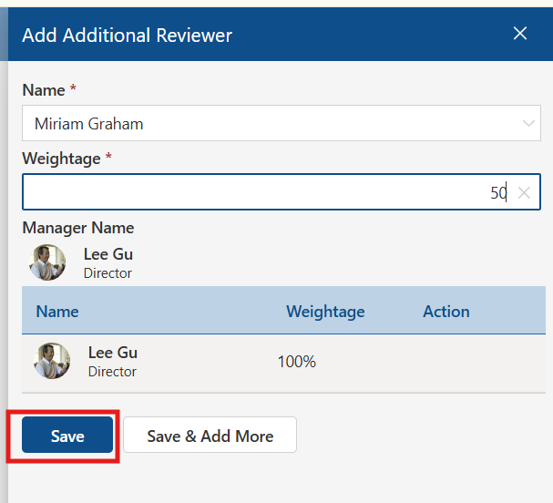
“Add Additional Reviewer” panel — selecting a colleague and weightage, then Save.
Email Template:

8. Additional Appraiser's Review Completion (to the primary appraiser)
Trigger: When that additional reviewer finishes and submits their portion, the primary appraiser is emailed to let them know it's done.
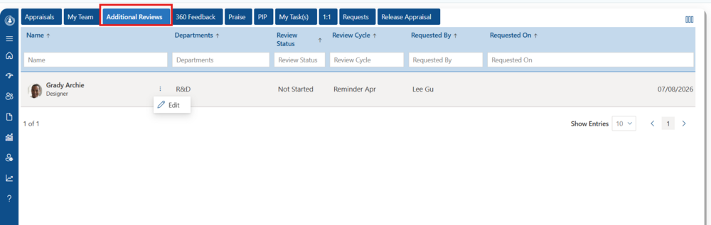
“Additional Reviews” dashboard, tracking status of extra reviewers.
Email Template:
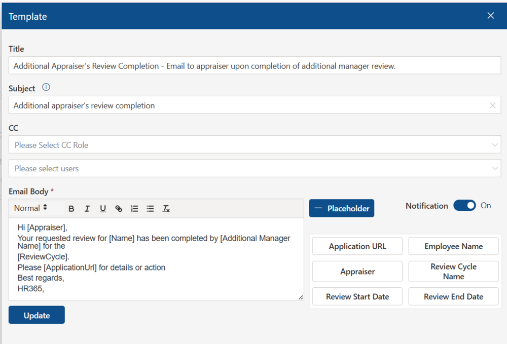
9. Review Refill (Request) — to HR
Trigger: On a completed review, a reviewer can click “Request Review Refill” if something needs to be reopened. This emails HR to ask them to reopen it.

Completed review summary — “Request Review Refill” button.
Email Template:

4. HR Review
This is HR's oversight layer on top of the manager/appraiser process — tracking the “Collaboration” period, handling extension/refill requests, sending reviews back for correction, and finally releasing results to everyone. Because this module has the most steps, it also has the most templates.
1. HR Review Reminder (1 day before the Collaboration period starts)
Trigger: Calculated from the Appraisal Cycle's “No. of Days for Collaboration” setting — fires one day before that window opens.

Appraisal Cycle setup — “No. of Days for Collaboration” drives this and the next 3 templates.
Email Template:
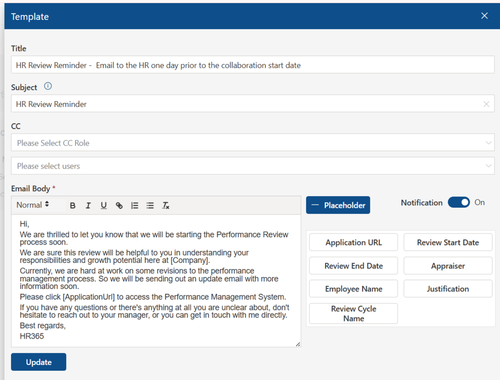
2. HR Review Notification (on the start date)
Trigger: Fires automatically on the day the Collaboration/HR-review window opens.
Email Template:

3. HR Review Last Day Reminder
Trigger: Fires one day before the Collaboration window closes.
Email Template:
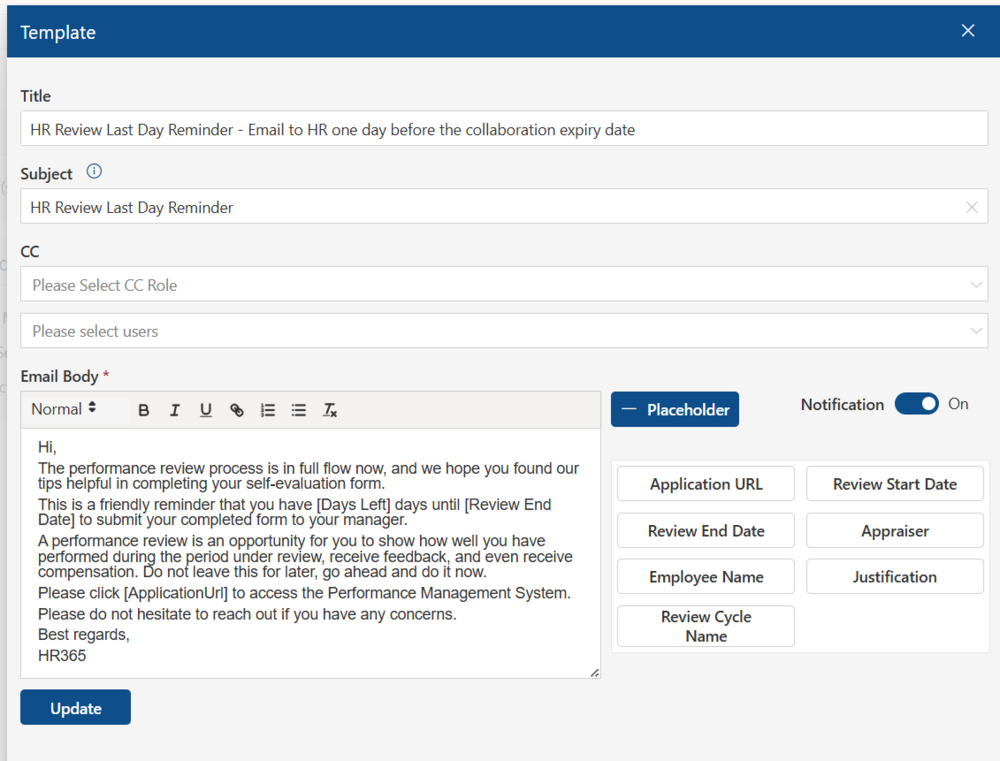
4. HR Review Last Day Notification
Trigger: Fires on the last day of the Collaboration window.
Email Template:

5. Manager Review Complete (to HR / additional manager)
Trigger: When the manager finishes their own evaluation — filling in the Summary by Appraiser, signing, and clicking “Submit & Sign” — an email goes out to HR (or an additional manager, if one is assigned) letting them know feedback is needed from them next.
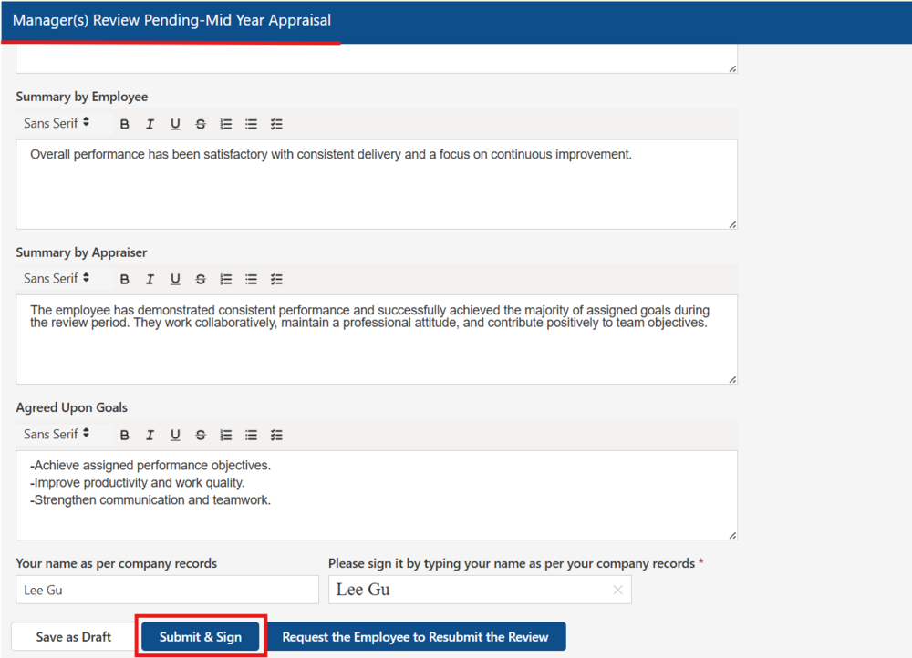
Manager's review screen — signs and clicks “Submit & Sign” to complete their evaluation.
Email Template:

6. Request to Extend Review (Request) — to HR
Trigger: If an employee misses the self-review deadline, they see a “Raise extension request” button, type a justification, and submit. HR is emailed the request.
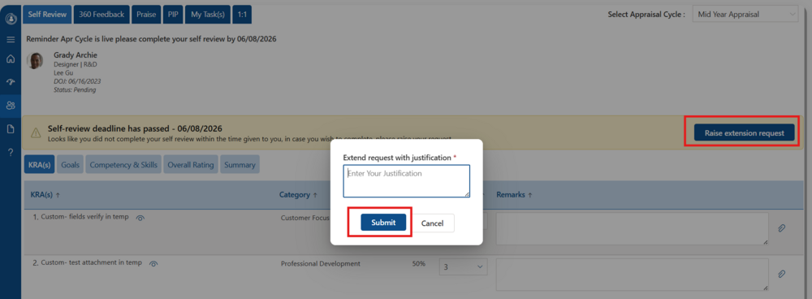
Employee's self-review screen after the deadline — “Raise extension request” with a justification box.
Email Template:
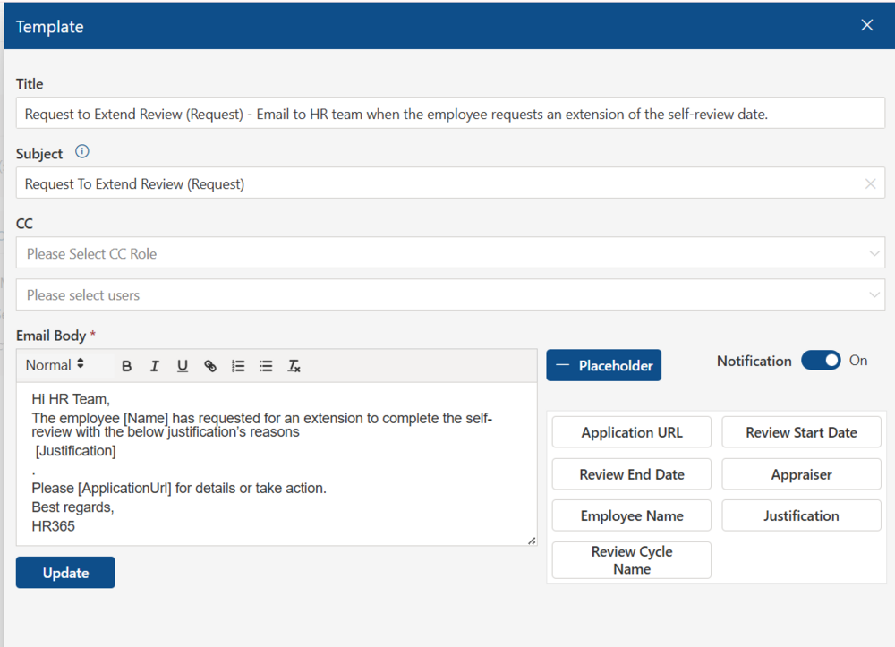
7. Request to Extend Review (Approved) — to employee
Trigger: HR opens Requests → Appraisal Cycle and clicks “Extend” on the pending request.
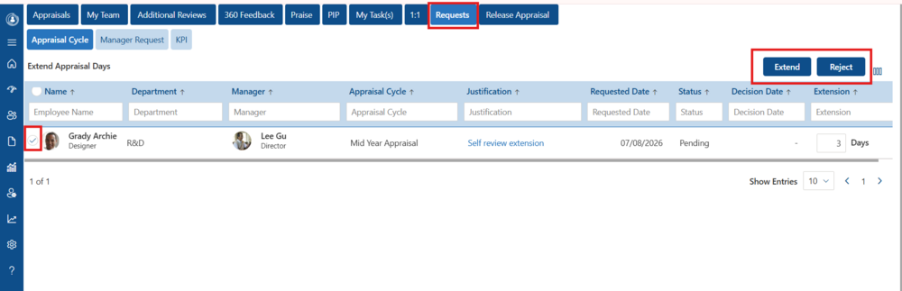
HR's “Requests › Appraisal Cycle” tab — Extend / Reject actions.
Email Template:
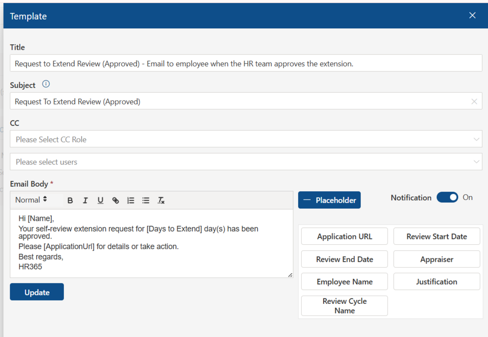
8. Request to Extend Review (Rejected) — to employee
Trigger: HR clicks “Reject” instead, on the same screen shown above.
Email Template:

9. HR Review Reminder to Employee (manual nudge)
Trigger: From the HR Head – HR Admin View, HR clicks the envelope/“Send reminder” icon next to an employee row to chase them directly.

HR Head – HR Admin View — “Send reminder” icon, aimed at the employee.
Email Template:
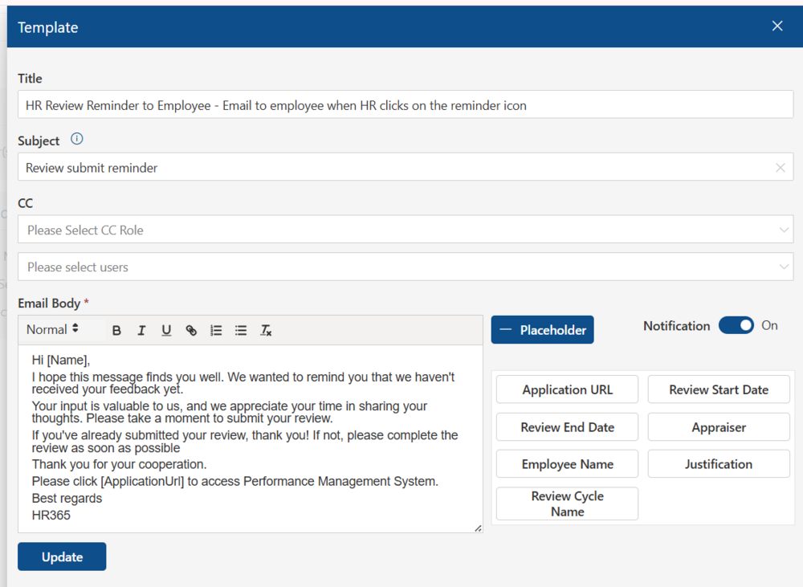
10. Review Submit Reminder (manual nudge to the Appraiser)
Trigger: Same HR Admin View, but HR clicks the reminder icon on a row where it's the Appraiser's Review that's outstanding.

HR Head – HR Admin View — “Send reminder” icon, aimed at the manager/appraiser.
Email Template:

11. Request to Refill Review (Approved) — to manager
Trigger: HR opens Requests → Manager Request and clicks “Approve” on a pending refill request.

HR's “Requests › Manager Request” tab — Approve / Reject actions on a refill request.
Email Template:
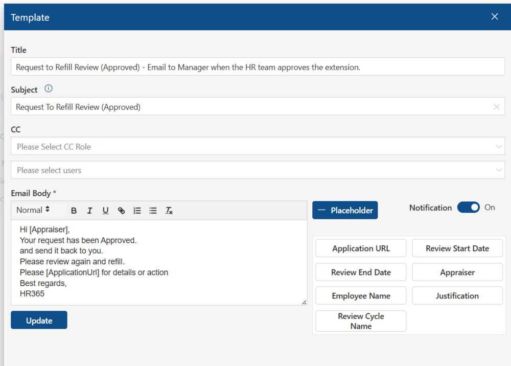
12. Request to Refill Review (Rejected) — to manager
Trigger: HR clicks “Reject” instead, on the same screen.
Email Template:
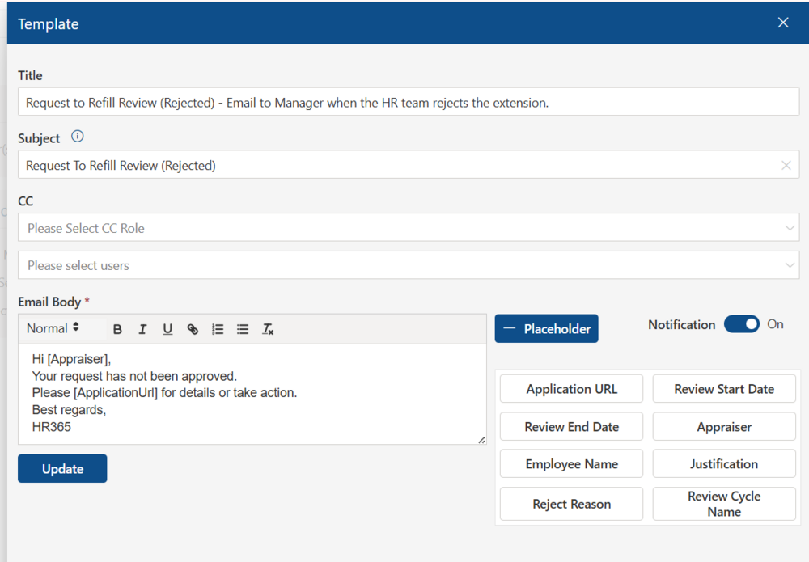
13. Self Review (Rejected) — to employee
Trigger: While auditing a completed review, HR clicks “Send back for revision” and chooses “Send back to Self reviewer.”
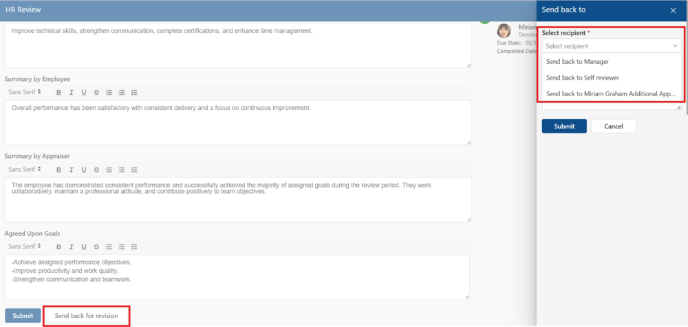
HR Review screen — “Send back for revision” lets HR return the packet to the Self reviewer, Manager, or an Additional Appraiser.
Email Template:
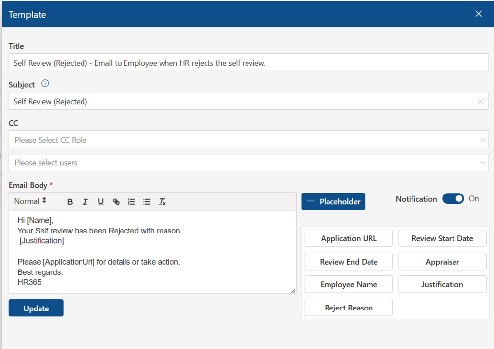
14. Manager Review (Rejected) — to manager
Trigger: Same screen, but HR chooses “Send back to Manager.”
Email Template:
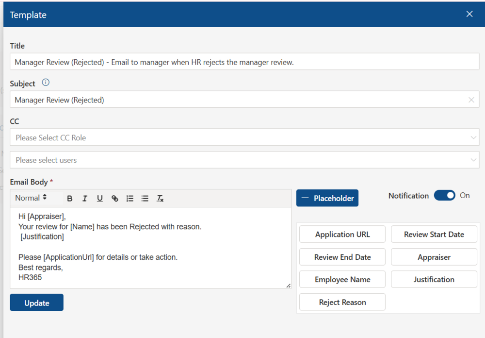
15. Additional Manager Review (Rejected) — to additional manager
Trigger: Same screen, but HR chooses “Send back to [Additional Appraiser's name].”
Email Template:

16. All Manager Review (Rejected) — to manager and additional manager(s) together
Trigger: From the HR Head – HR Admin View home list, HR clicks the “✕ Reject” icon on an employee's row to reject the whole review in one action.

HR Head – HR Admin View — the “Reject” (✕) icon rejects both the manager and any additional-manager reviews at once.
Email Template:

17. Appraisal Results for the Current Cycle — to the whole team
Trigger: Once everything checks out, HR opens “Release Appraisal,” adds remarks, and clicks “Release.” Every employee in the cycle is emailed that results are now visible.

“Release Appraisal” screen — add remarks and click “Release” to finalize the cycle for everyone.
Email Template:

18. Task Delegation Notification (to the delegatee)
Trigger: A user opens Delegation → “+ Add,” picks who they're delegating to, a Start/End Date and reason, and clicks “Save.”
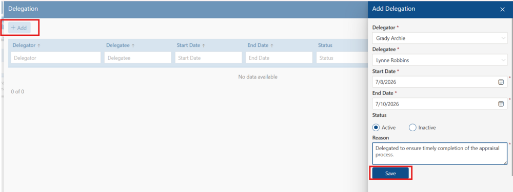
“Add Delegation” panel — delegator, delegatee, date range, and reason.
Email Template:
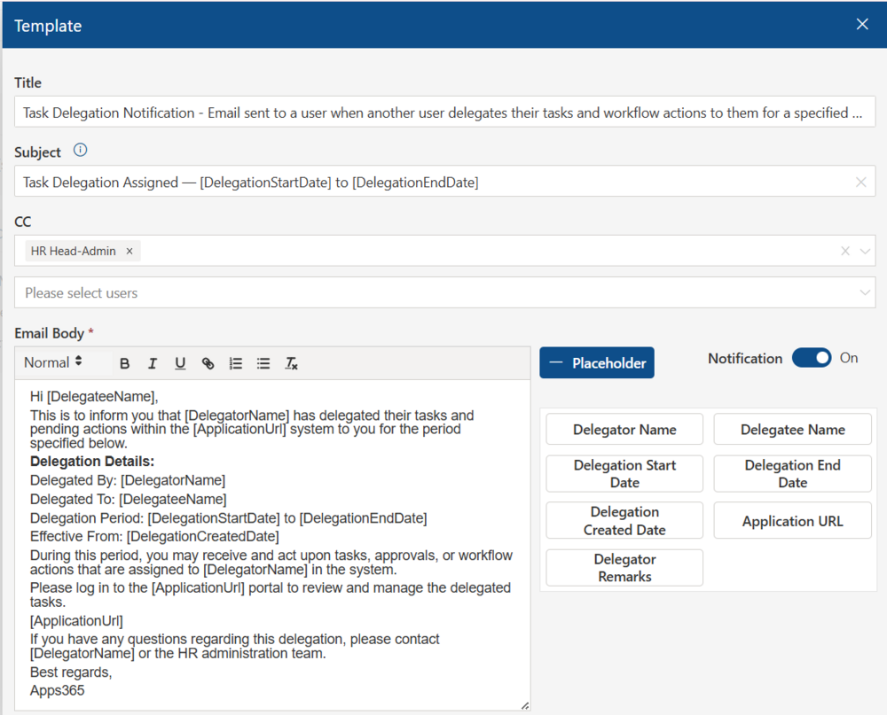
5. 360 Feedback
Lets an employee's peers/manager give rounded, multi-perspective feedback outside of the formal appraisal cycle.
1. Request Feedback (to the person being asked)
Trigger: Someone opens 360 Feedback → Feedback Request(s) → “+ Request,” picks who the feedback is from, chooses a template, and clicks Submit.
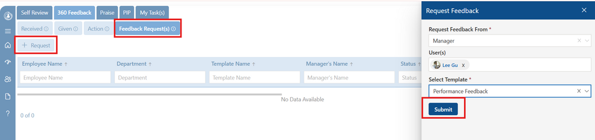
“Request Feedback” panel — choose who it's requested from and which template to use.
Email Template:

2. Feedback Reminder (to the person who hasn't responded)
Trigger: From the Feedback Request(s) list, clicking the envelope/“Reminder” icon next to a pending request nudges that person.
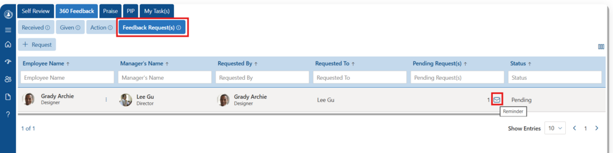
“Feedback Request(s)” tab — the “Reminder” icon on a pending request.
Email Template:
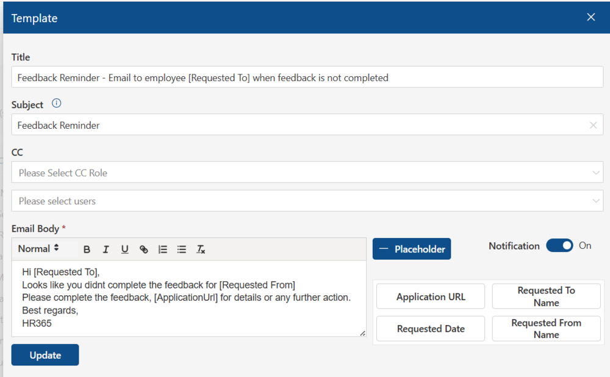
3. Feedback Completion (to the original requester)
Trigger: The person being asked fills in the star ratings and comments and clicks “Submit.” The requester is then emailed to say it's done.
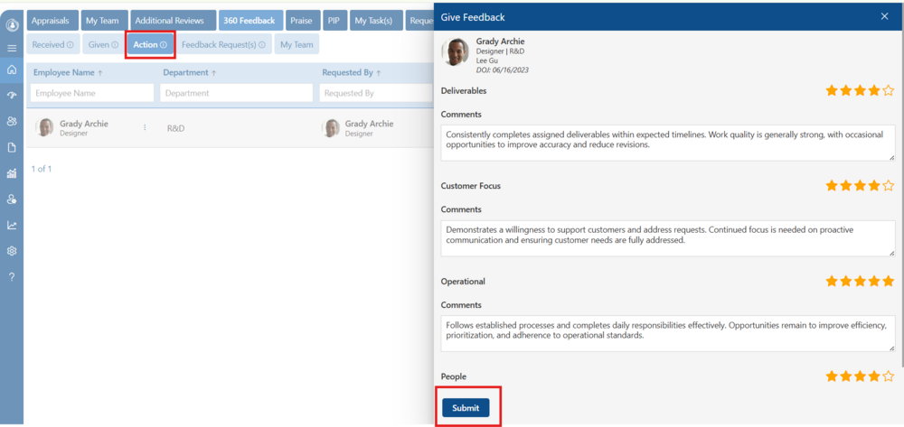
“Give Feedback” form — ratings and comments, then Submit.
Email Template:
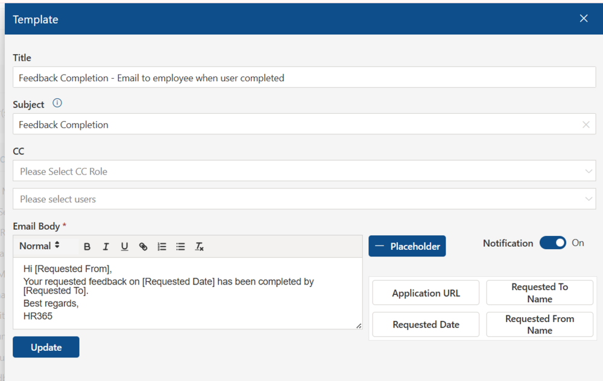
4. Email To (sharing a Feedback Report)
Trigger: An HR Admin opens Report → Feedback Report, views the details for someone, and clicks “Email To” to send the summarized ratings out.

“Feedback Report” screen — filter by date/employee and click “View.”

“Feedback Details” — the “Email To” button sends the summary.
Email Template:

6. 1:1
Covers one-on-one meetings between a manager and their reportee, plus the follow-up action items that come out of them.
1. Schedule a Meeting (to both participants)
Trigger: A 1:1 is created — title, template, participants, date/time — and saved. Both people get an email confirming the details.

1:1 scheduling screen — meeting details, talking points, and action points.
Email Template:

2. Meeting Overdue (to the employee)
Trigger: There is no in-app button for this one — it needs to fire automatically once a scheduled 1:1's date has passed and the meeting is still marked incomplete.
Email Template:

3. Task Reminder (manual nudge to a task owner)
Trigger: From 1:1 → Team Tasks, clicking the envelope icon on an overdue task and confirming “Do you want to send Reminder?”

“Team Tasks” list — confirming a manual reminder send for an overdue task.
Email Template:

4. Task Notification (when a task is first assigned)
Trigger: When an Action Point in a 1:1 is assigned to someone (with a due date), that person is emailed right away.
Email Template:

7. KPI
Mirrors the Self Review / Appraiser's Review structure, but for KPI (Key Performance Indicator) cycles. It has its own “self-KPI” stage and “manager reviews the KPI” stage, each with the same announce / notify / remind pattern, plus approval and extension-request emails.
1. KPI Review Announcement (1 day before the self-KPI period starts)
Trigger: Calculated from the KPI Cycle's Start Date. Fires one day beforehand.
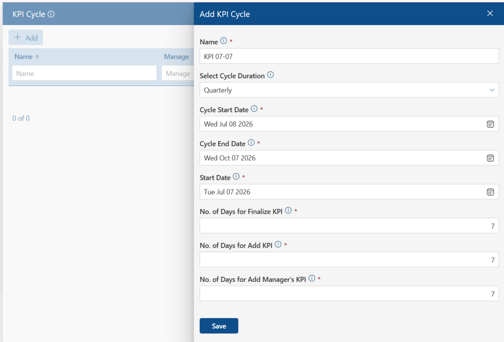
“Add KPI Cycle” screen — Cycle Start/End Date and day-counts driving the KPI email set.
Email Template:
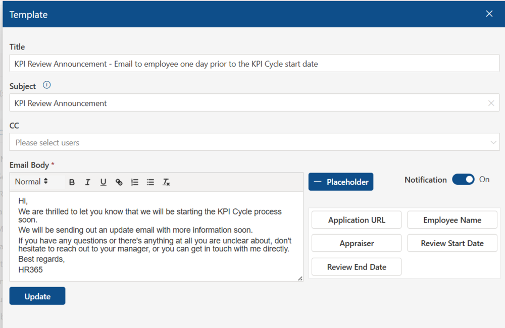
2. KPI Review Notification (on the start date)
Trigger: Fires automatically on the KPI cycle's start date.
Email Template:
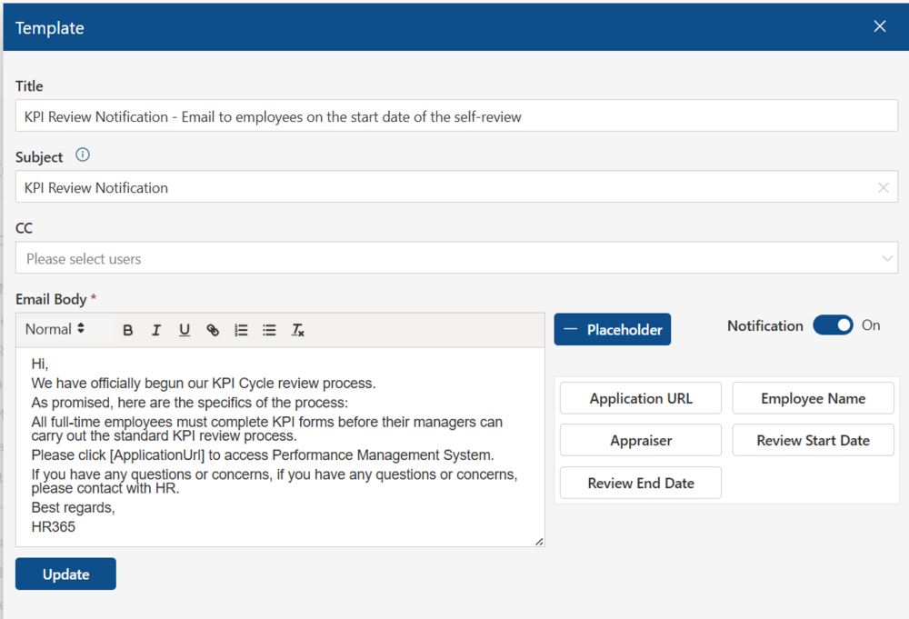
3. KPI Completion Notification (to the appraiser)
Trigger: The employee fills in their KPI form and clicks “Submit & Sign” — their manager is emailed immediately that it's ready for review.

Employee's KPI form — Achievements, Self Reflections, Action Plan.
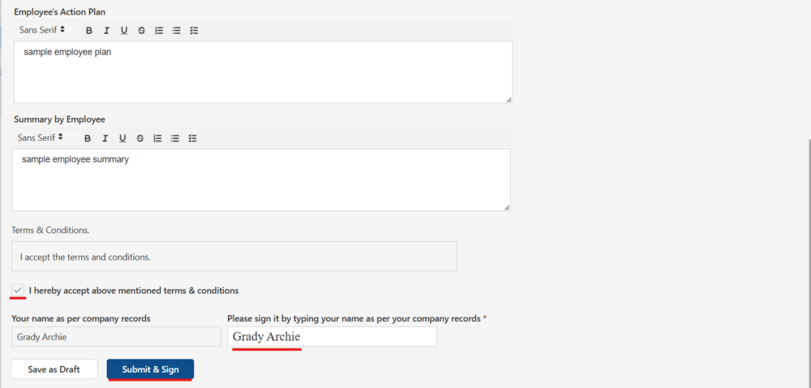
Employee accepts terms and clicks “Submit & Sign” on the KPI form.
Email Template:
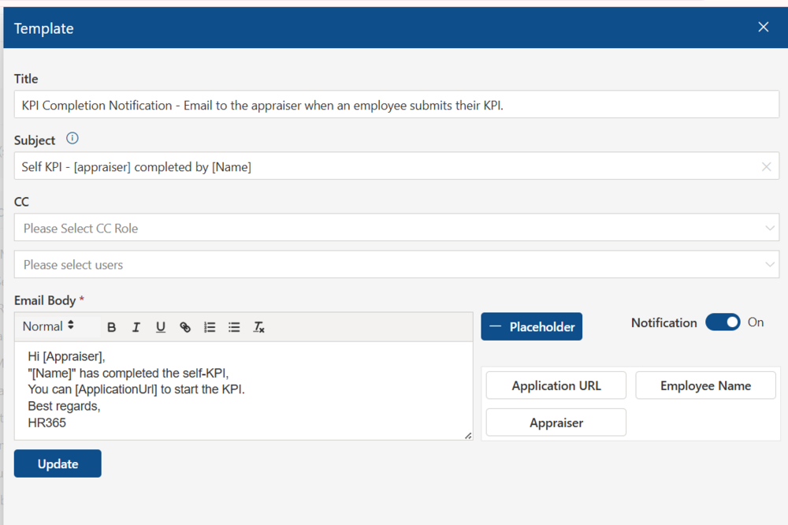
4. KPI Last Day Reminder
Trigger: Fires one day before the self-KPI submission deadline.
Email Template:
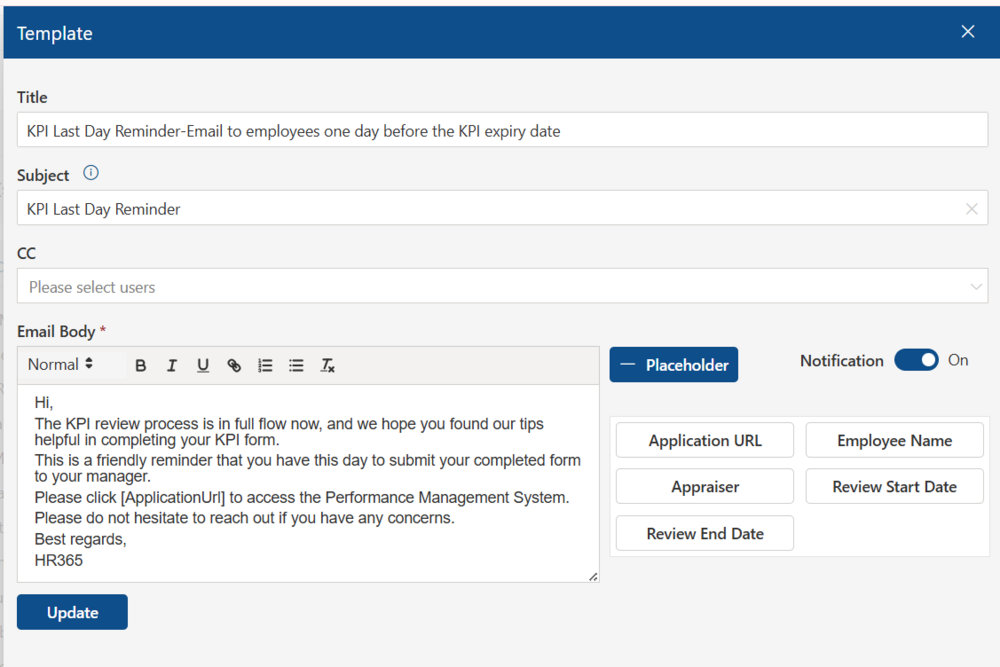
5. KPI Last Day Notification
Trigger: Fires on the actual last day of the self-KPI window.
Email Template:
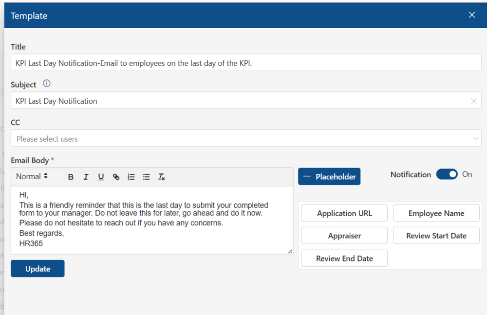
6. KPI Rejected (to employee)
Trigger: The manager reviews the submitted KPI and clicks “Reject” instead of “Approve.”

Manager's KPI review screen — “Approve” / “Reject” buttons.
Email Template:

7. KPI Approved (to employee)
Trigger: The manager clicks “Approve” on the same screen.
Email Template:
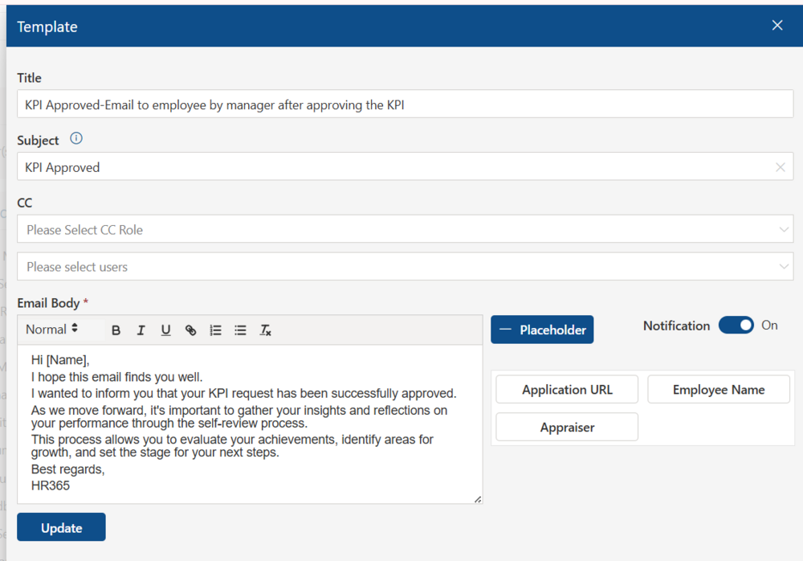
8. KPI Finalize Reminder (to the manager)
Trigger: Fires one day before the KPI cycle's overall expiry, reminding the manager to finalize/approve KPIs. Governed by the KPI Settings' Approver configuration.
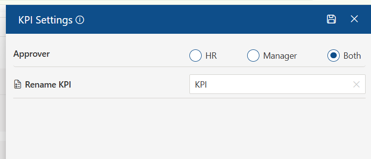
“KPI Settings” — who approves KPIs (HR / Manager / Both).
Email Template:

9. Manager Review Announcement (KPI manager-cycle, 1 day before it starts)
Trigger: Calculated the same way as the self-KPI announcement, but for the manager's review portion of the KPI cycle.
Email Template:
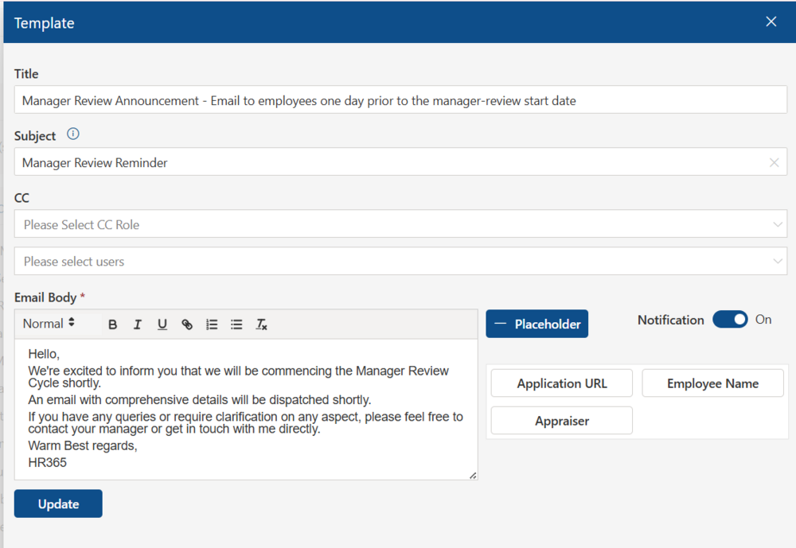
10. Manager Review Notification (KPI manager-cycle, on start date)
Trigger: Fires on the start date of the manager-side KPI review.
Email Template:
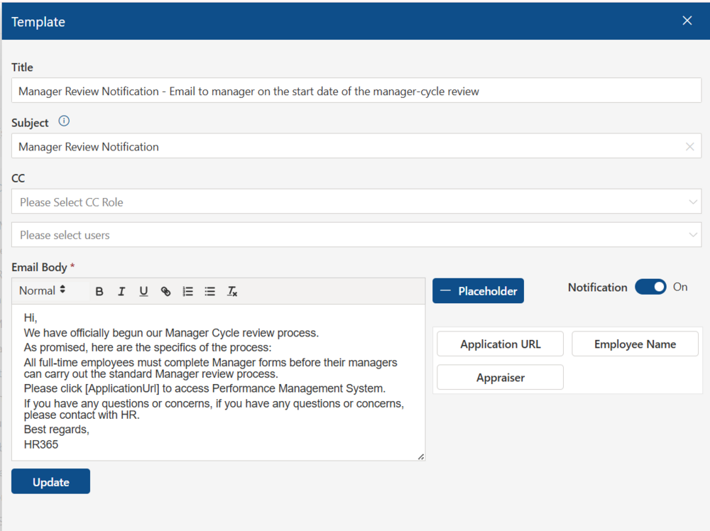
11. Manager Completion Notification (KPI)
Trigger: Fires once the self-KPI has been completed, letting the appraiser know their review can begin.
Email Template:

12. Manager Last Day Reminder (KPI manager-cycle)
Trigger: Fires one day before the manager's KPI review deadline.
Email Template:

13. Manager Last Day Notification (KPI manager-cycle)
Trigger: Fires on the last day of the manager's KPI review window.
Email Template:

14. Manager Finalize Reminder (KPI)
Trigger: Fires as the overall manager KPI cycle nears its expiry.
Email Template:

15. Request to Extend KPI-Review (to HR)
Trigger: If an employee misses the KPI deadline, they click a “click here” link, type a justification, and submit — HR is emailed the request.

Missed-KPI screen — “click here to raise your request” opens a justification box.
Email Template:
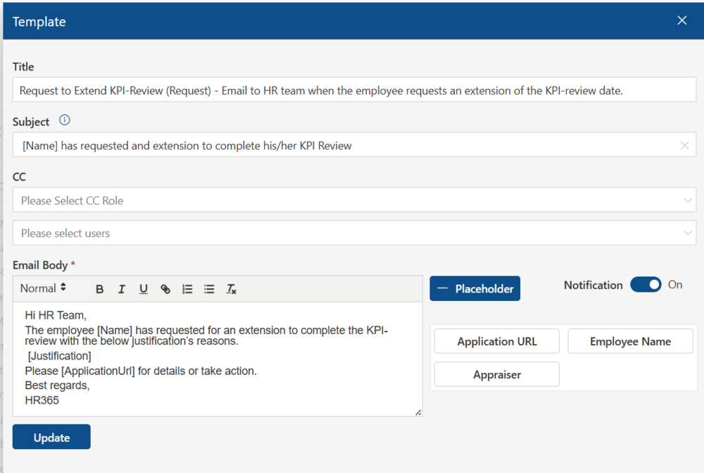
8. Praise
A lightweight, informal way for anyone to publicly recognize a colleague.
1. Praise Notification (to the recipient)
Trigger: Someone opens Praise → “+ Praise,” picks a colleague, a badge (e.g. “Problem Solver”), writes a note, and clicks Submit.

“Add Praise” panel — pick a badge, write a note, and Submit.
Email Template: Not available in the provided screenshots.
The template-editor screenshot for this email wasn't in the set of images provided — flagging so it can be added once available.
9. PIP (Performance Improvement Plan)
For formally documenting and tracking an employee who needs a structured improvement plan.
1. Performance Improvement Plan (PIP) Notification (to employee)
Trigger: The manager opens “Add Employee” under PIP, fills in the reason, Start/End Date, and planned activities/tasks, then clicks “Save.”
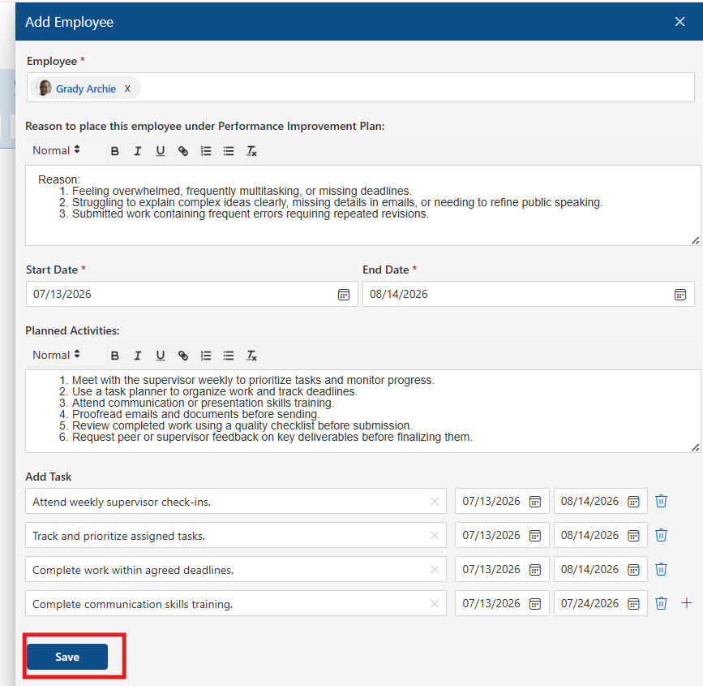
“Add Employee” (PIP) — reason, Start/End Date, and planned tasks, then Save.
Email Template:
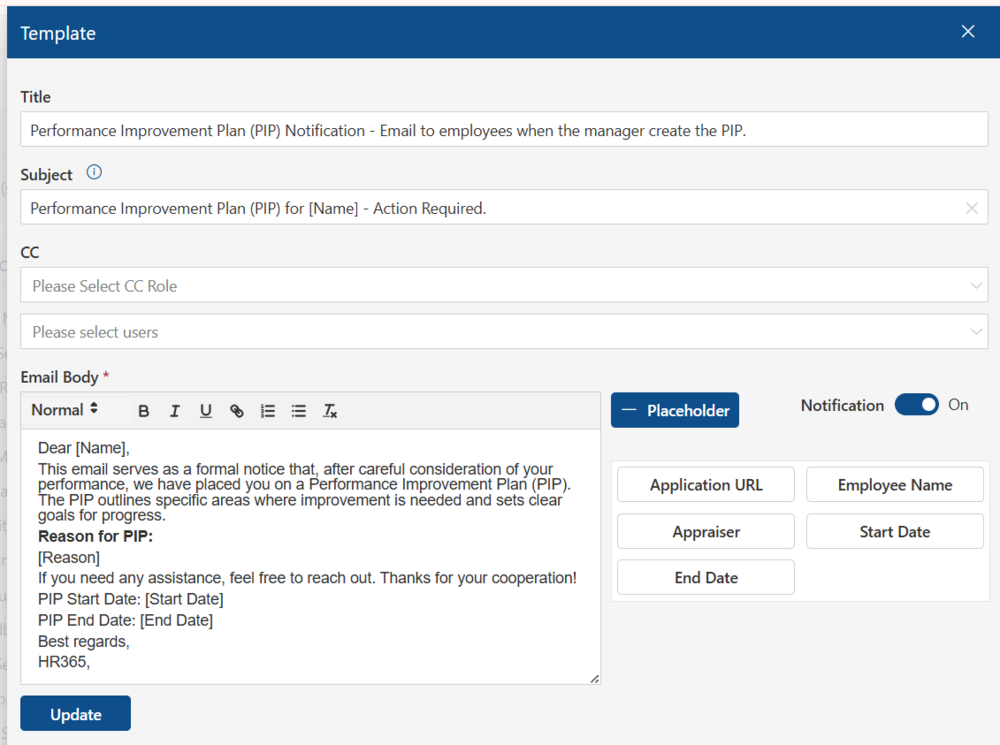
2. Update on Unsuccessful PIP Outcomes (to HR)
Trigger: At the end of the PIP period, the manager opens “Make Decision,” selects “Notify HR of Unsuccessful PIP for Employee,” writes their assessment, signs, and submits.

PIP dashboard — “Make Decision” menu option.

“Edit Employee” — choosing “Notify HR of Unsuccessful PIP for Employee” and submitting the manager's assessment.
Email Template: